Explore Varanasi
A Brief History
Varanasi, also called Kashi, is among the oldest continuously inhabited cities on the Ganges. Ghats, Shiva temples, and cremation grounds draw Hindu pilgrims, while narrow lanes preserve weaver workshops and medieval neighbourhood shrines that anchor sacred geography in North India. Evening aarti ceremonies and silk-weaver lanes extend sacred Ganges geography through the old city core.
Attractions Map
Top Sights & Activities
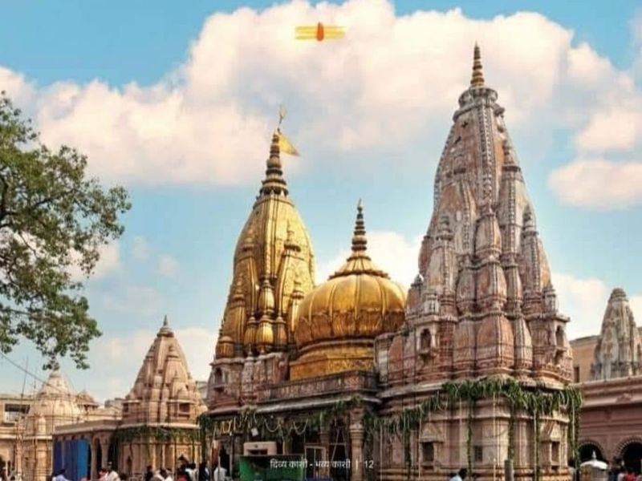
Shri Kashi Vishwanath Temple
Shri Kashi Vishwanath Temple is listed among principal sites for Varanasi within India. Municipal and regional heritage listings document its place in the historic centre and travellers routes through Varanasi. Shri Kashi Vishwanath Temple is listed among principal sites for Varanasi within India.
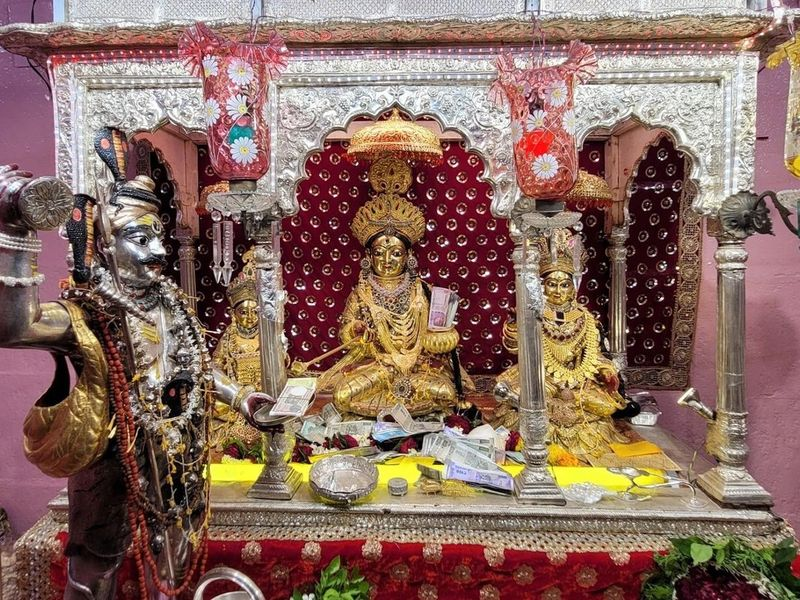
Shree Annapurna Mandir
Shree Annapurna Mandir, also known as Annapurna Devi Mandir, is a renowned Hindu temple located near the Kashi Vishwanath Temple in Varanasi, Uttar Pradesh. Constructed in 1729 AD by Maratha Peshwa Baji Rao, this temple holds significant religious importance and is dedicated to Goddess Annapurna Devi, the deity of nourishment.
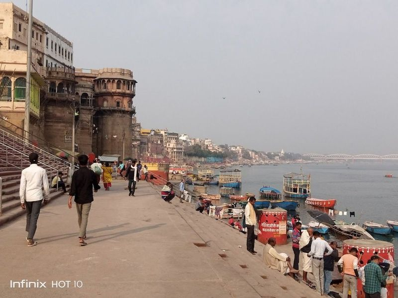
Manikarnika Ghat
Manikarnika Ghat, also known as Manikarnika Mahashamshan Ghat, is one of the oldest and most ghats in Varanasi. It holds great religious and historical significance as it is the primary site for traditional Hindu cremations. This ghat serves as a reminder of the fragility of life and the ultimate truth of mortality.
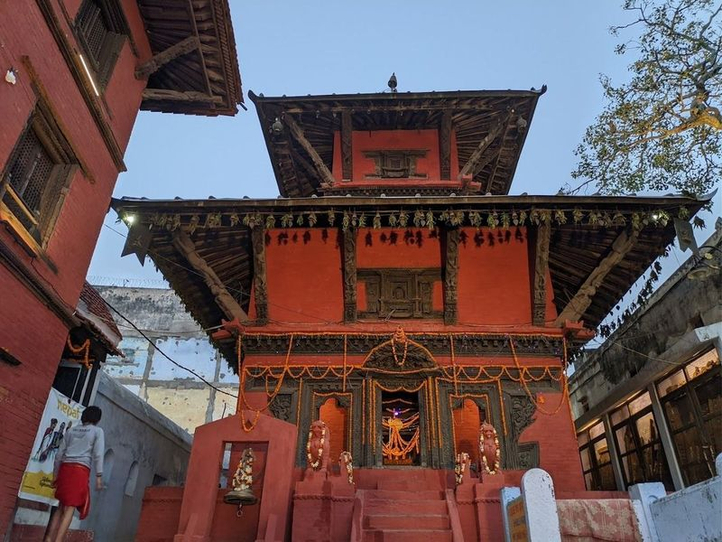
Nepali Temple
The Nepali Temple, also known as the Kathwala Temple, is a serene sanctuary in Varanasi that reflects the deep cultural ties between India and Nepal. Built in the 19th century by an exiled Nepalese king, this terracotta temple is dedicated to Lord Shiva and features pagoda-style architecture reminiscent of Nepal. The intricate wooden carvings depicting Hindu deities adorn its terraces and stone walls, showcasing a blend of Hindu and Buddhist design elements.
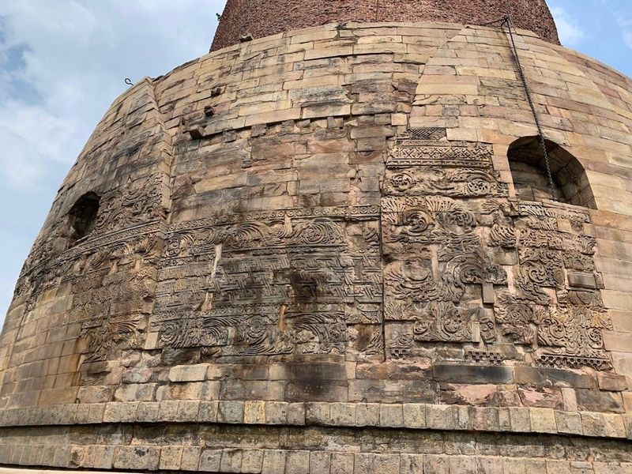
Dhamek
Dhamekh Stupa, situated in Sarnath near Varanasi, India, is a significant ancient Buddhist monument dating back to 500 CE. Originally built by Emperor Ashoka in the 3rd century BCE, it has undergone various renovations over time. The stupa stands at 43 meters tall and features intricate carvings depicting birds and scripts from the Gupta period. This cylindrical structure is believed to mark the location where Buddha delivered his first sermon after attaining enlightenment.
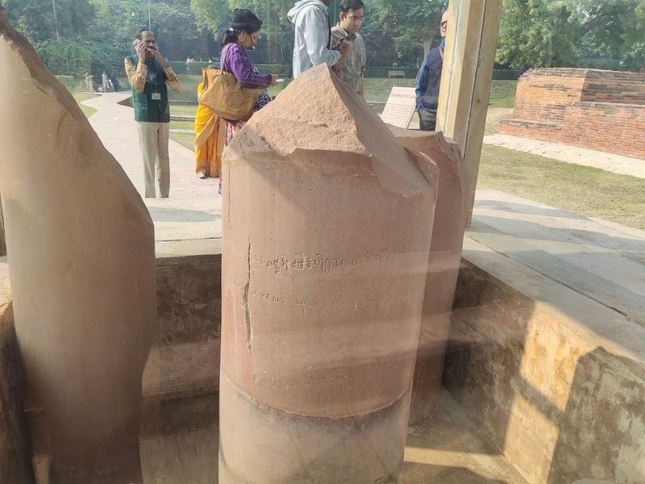
Ashoka Pilar, Sarnath,(Varanasi)
The Ashoka Pillar, located in the Sarnath Deer Park just 10km north of Varanasi, is a significant historical site and a popular tourist attraction. This 17m tall pillar, built by Emperor Ashoka, is housed in a glass enclosure and features sandstone remains. The pillar bears an engraving of four lions back to back, which is the official symbol of India.
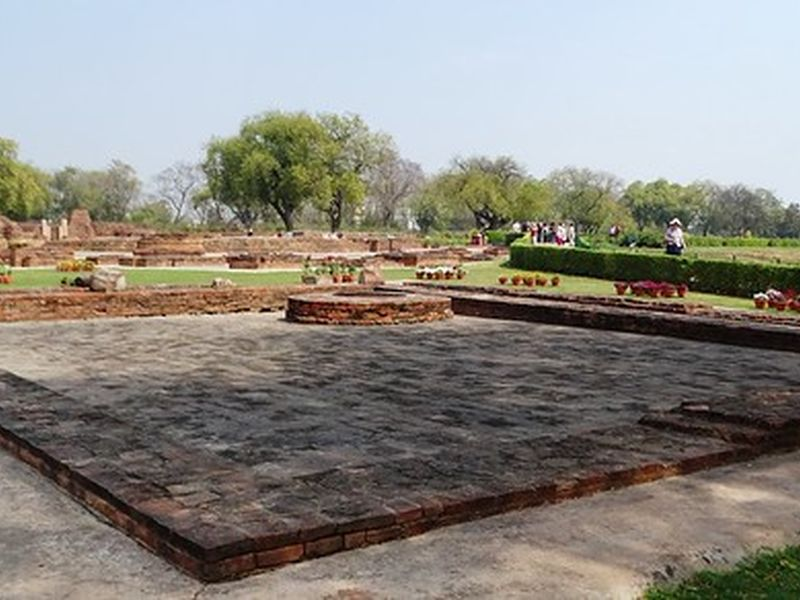
Archaeological Buddhist Remains of Sarnath
Archaeological Buddhist Remains of Sarnath is listed among principal sites for Varanasi within India. Municipal and regional heritage listings document its place in the historic centre and travellers routes through Varanasi. Archaeological Buddhist Remains of Sarnath is listed among principal sites for Varanasi within India.
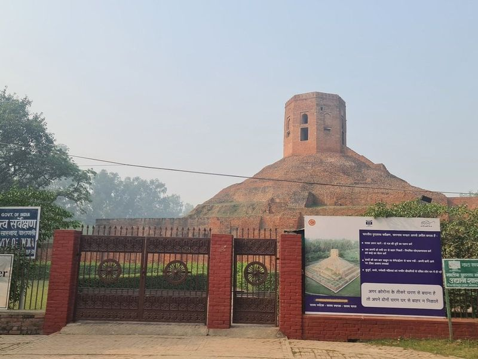
Chaukhandi Stupa Sarnath Varanasi
Chaukhandi Stupa, a significant historical Buddhist monument, is a terraced structure dating back to the Gupta period. This impressive site showcases a sizable mound with a brick base and an octagonal tower. Alongside other attractions in Sarnath such as the Mulagandha Kuti Vihar and the Sarnath Archaeological Museum, it offers visitors a unique insight into Buddhism's ancient history.
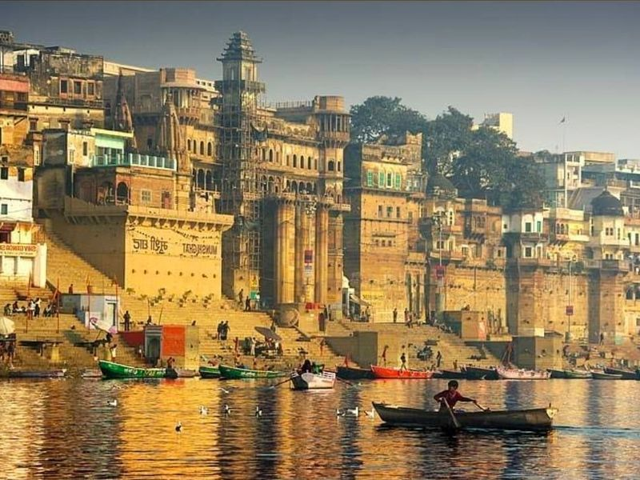
Assi Ghat, (Varanasi)
Assi Ghat Varanasi is a significant riverfront gathering place where religious festivals, performances, and yoga classes take place. It is ghats in the area and holds cultural importance as it marks the meeting point of River Assi with the Ganges. Pilgrims visit to bathe in its waters and worship a Shiva lingam beneath a pipal tree. The ghat comes alive in the evenings with hawkers and entertainers.
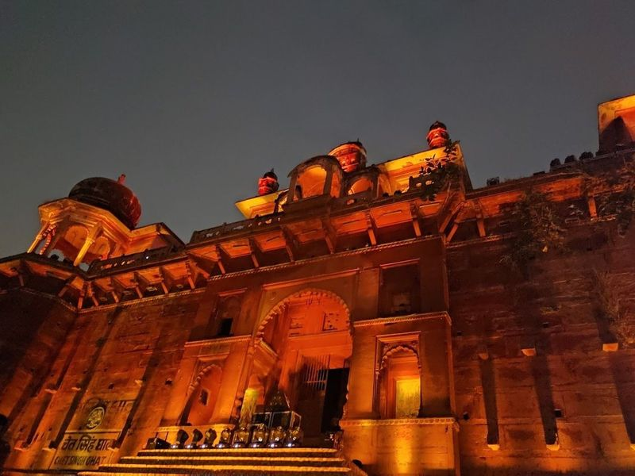
Chet Singh Ghat, (Varanasi)
Chet Singh Ghat, located along the banks of River Ganga in Varanasi, is a historical and relatively less crowded ghat. It features an 18th-century fortress-style palace known as the Palace of Raja Chet Singh, which lends a fairy tale vibe to the surroundings. The ghat offers a clean and serene environment for visitors to enjoy, with its terrace overlooking the river and stairs leading down to the water.
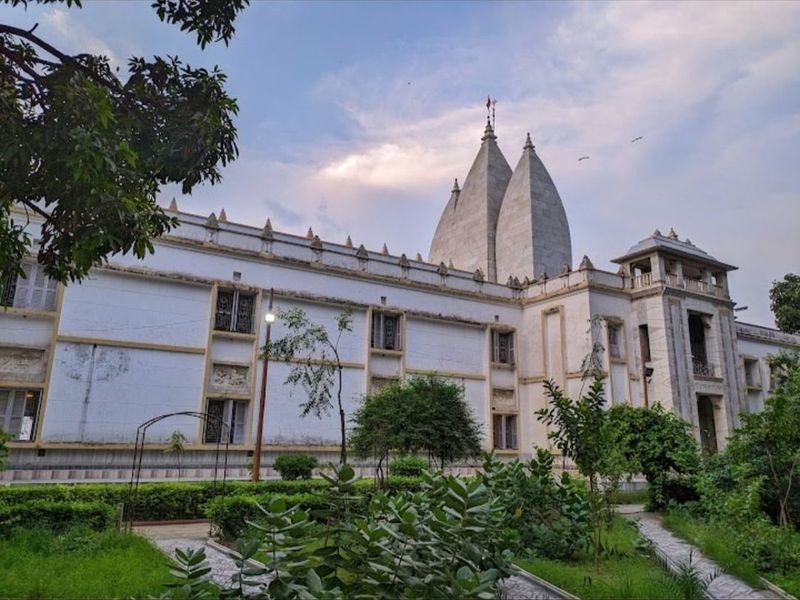
Shri Satyanarayan Tulsi Manas Temple, (Varanasi)
Shri Satyanarayan Tulsi Manas Mandir in Varanasi is a grand Hindu temple made of white marble, featuring beautiful gardens and detailed engravings. It's situated in the Tulsi Ghat area and pays homage to Lord Rama. The temple is known for its peaceful ambiance and elaborate marble carvings depicting stories from Ramcharitmanas, a renowned Hindu epic poem.
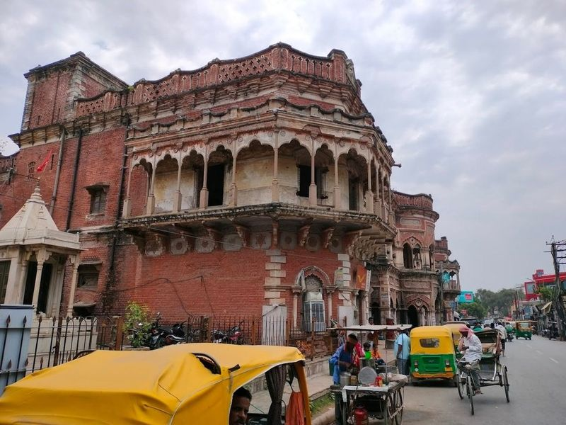
Shri Sankat Mochan Hanuman Temple, (Varanasi)
Sankat Mochan Hanuman Mandir, located on the serene banks of River Assi in Varanasi, is a sacred temple dedicated to Lord Hanuman. Established by Saint Sri Goswami Tulsidas in the early 1500s after a divine vision, it is believed that worshipping here can relieve devotees from various troubles and appease those suffering from shani dosh.
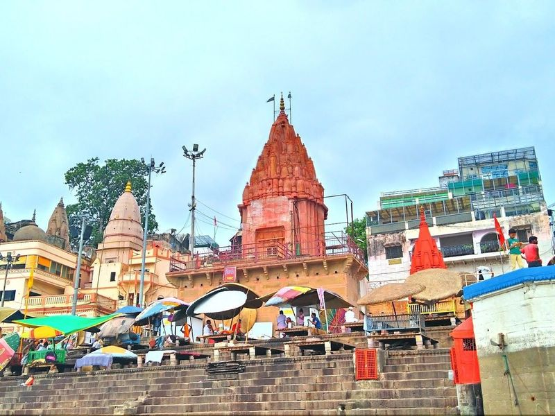
Dashashwamedh Ghat
Dashashwamedh Ghat is listed among principal sites for Varanasi within India. Municipal and regional heritage listings document its place in the historic centre and travellers routes through Varanasi. Dashashwamedh Ghat is listed among principal sites for Varanasi within India.
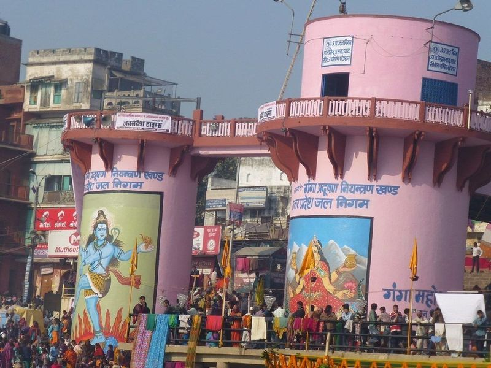
Dr. Rajendra Prasad Ghat, (Varanasi)
Rajendra Prasad Ghat, located next to the renowned Dashashwamedh Ghat in Varanasi, is a charming spot known for its religious ceremonies and historical significance. It offers a serene and clean environment, making it a must-visit for travelers seeking an authentic experience in India's spiritual center. The ghat provides a picturesque view of the blue waters adorned with Lord Shiva paintings and is popular for evening Ganga Aarti, attracting crowds from around the world.
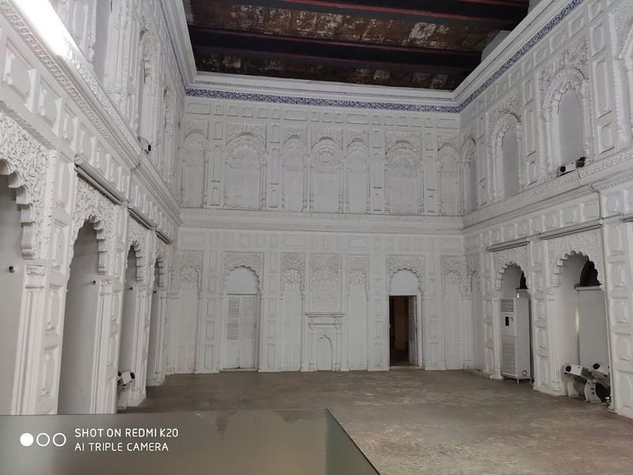
Man Singh Observatory
The Man Singh Observatory, also known as Jantar Mantar, is a historic 1700s observatory located at the Manmandir Ghat in Varanasi. Built by Raja Man Singh, it features a collection of astronomical instruments used to measure time, track celestial bodies' movement, and predict eclipses. The observatory stands as a tribute to India's astronomical genius and offers a unique glimpse into the city's rich cultural and architectural heritage.
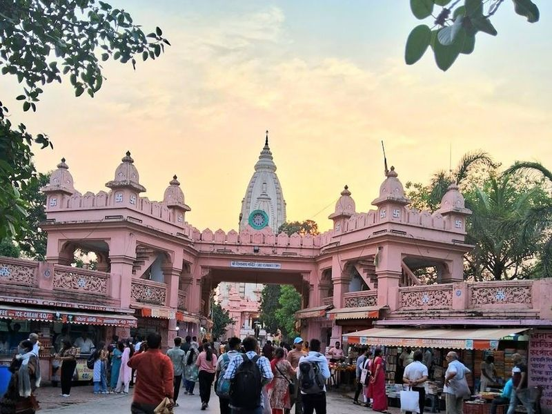
Shri Kashi Vishwanath Temple, BHU Campus, Varanasi
Nestled within the serene campus of Banaras Hindu University, the Shri Kashi Vishwanath Temple, also known as the New Vishwanath Temple or Birla Temple, is a must-visit destination in Varanasi. This magnificent structure, crafted from pristine white marble, stands as a testament to architectural beauty and spiritual significance. Dedicated to Lord Shiva, it features an expansive courtyard and an impressive spire that draws both pilgrims and tourists alike.
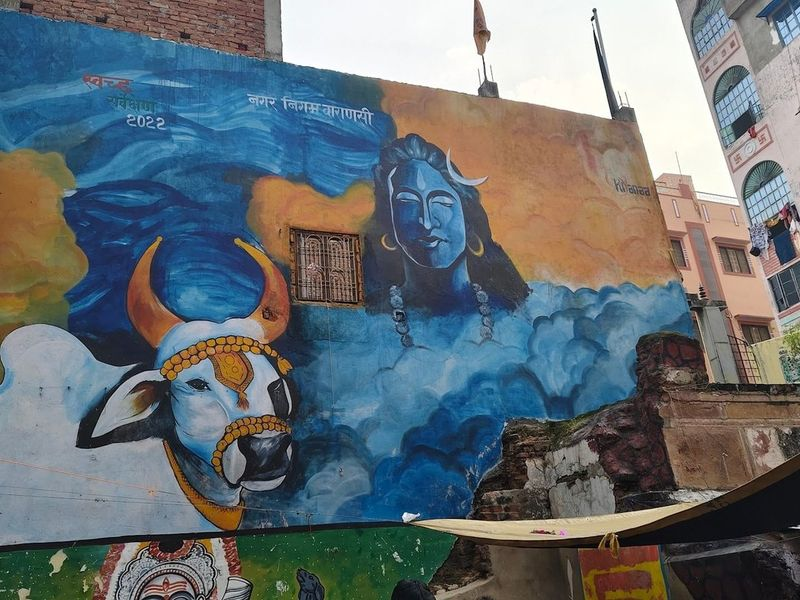
Shri Kaal Bhairav Temple, (Varanasi)
Nestled in the Vishweshwarganj area of Varanasi, Kaal Bhairav Temple is a captivating 17th-century Hindu shrine dedicated to Lord Bhairav Naath. Just a short distance from the renowned Kashi Vishwanath Mandir and Varanasi Junction, this temple stands as one of the oldest and most significant spiritual sites in Banaras.
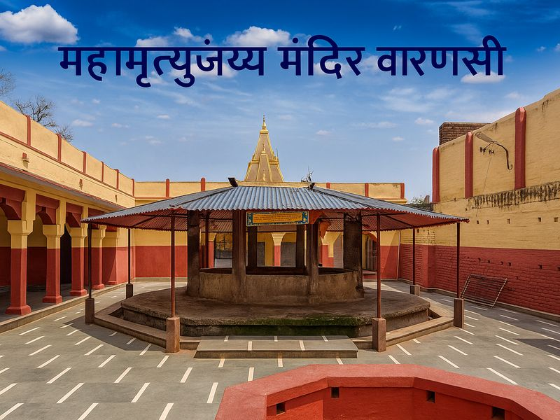
Shri Mahamrityunjay Mahadev Temple, (Varanasi)
Mrityunjay Mahadev Temple is a renowned and culturally significant temple in Varanasi, housing shrines that are over a thousand years old. The temple is dedicated to Lord Shiva and features a shivalinga believed to have the power to heal chronic diseases. Located on the way from Daranagar to Kalabhairava Temple, the temple also boasts an ancient well with water that is said to possess healing properties for various ailments.
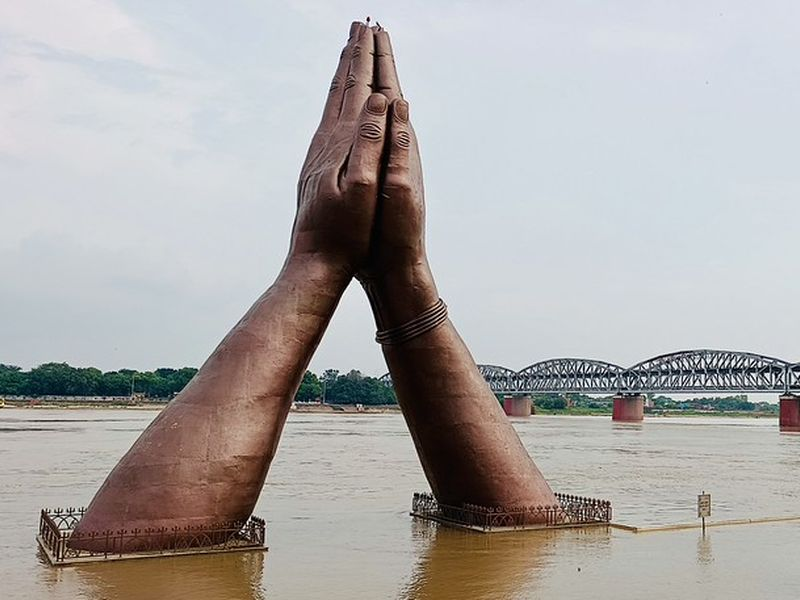
Namo Ghat
Namo Ghat is listed among principal sites for Varanasi within India. Municipal and regional heritage listings document its place in the historic centre and travellers routes through Varanasi. Namo Ghat is listed among principal sites for Varanasi within India.
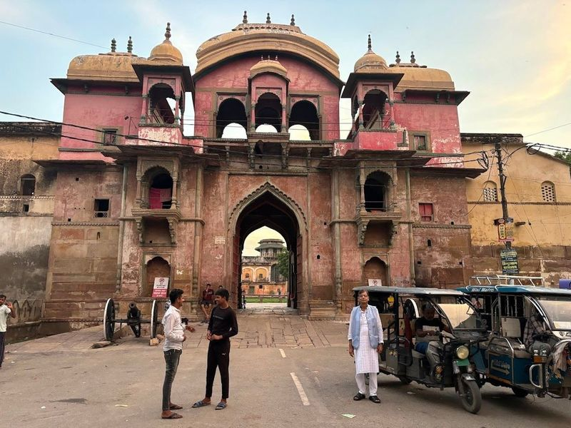
Ramnagar Fort, (Varanasi)
Ramnagar Fort Varanasi is a sandstone fort and royal residence that houses a museum featuring vintage cars, costumes, and an armory. The Mughal Era Fortification is a must-visit in the city of Varanasi. While there, visitors can also explore other historical sites such as Chunar Fort and the Bharat Kala Bhavan Museum.
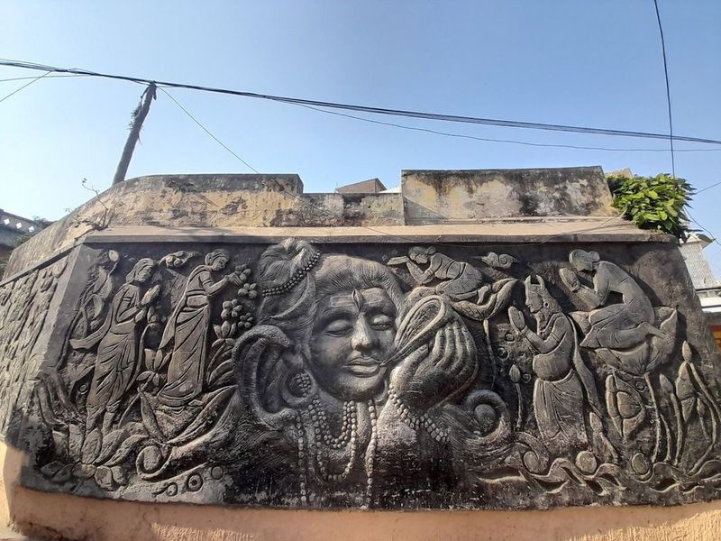
Shri Batuk Bhairav Temple, (Varanasi)
Nestled just 2 kilometers from the bustling heart of Varanasi, the Shri Batuk Bhairav Temple stands as a significant spiritual haven for Aghoris and Tantriks. This ancient shrine is dedicated to Batuk Bhairav, an incarnation of Lord Shiva revered in his child form. The temple is steeped in local lore, believed to be a protective force against evil, with legends stating that Lord Shiva took on this form to safeguard devotees from malevolent entities.